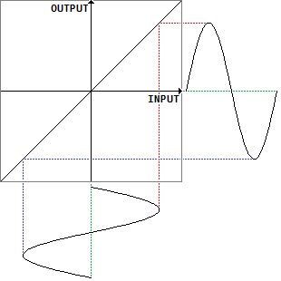
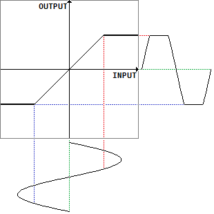
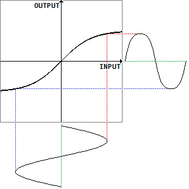
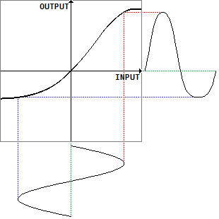

歪みと波形・倍音その9（非線形性と歪み）
2017年12月12日 カテゴリー：歪みと波形・倍音
歪み系エフェクターのデジタル処理を考える場合、処理内容は基本的に関数の形（入力x、出力y）で書くことになります。以下にその例と非線形関数による歪みについて簡単に説明しておきます。倍音については前回の記事にまとめています。
まず理想的な増幅器を考えます。増幅率をaとすると、出力は入力に比例して大きくなるy=axという式になります。下図はa=1のときの入力と出力の関係をグラフにしたものです。

このように入力と出力が直線（比例）関係にある場合は「線形」です。直線の傾きaが変わっても線形といえます。正弦波を入力したとき（上図下側）、出力（上図右側）には全く歪みがありません。
増幅器には通常電源電圧等の制約があるため、一定の入力を超えたところから出力が頭打ちします。グラフでは、途中からyが一定となる形になります。

正弦波を入力したとき、出力はクリップされたものとなります。この場合は線形でないので「非線形」であり、歪みが発生するというわけです。しかしながら、単純なクリッピングのみで自然な歪みを得るのはなかなか難しいと思います。
現実の増幅素子では急に出力が頭打ちになるわけではなく、ある程度滑らかな変化だと考えられます。

上図の関数はy=tanh(x)で、このようにS字を引き伸ばしたような形はシグモイド曲線と呼ばれています。正弦波を入力したとき、出力はソフトにクリップされたものとなります。
真空管を使った増幅では、非対称で複雑なカーブになるようです。

正弦波を入力したとき、出力は非対称に変形しているものとなります。この場合の関数の詳細については別記事にまとめています。